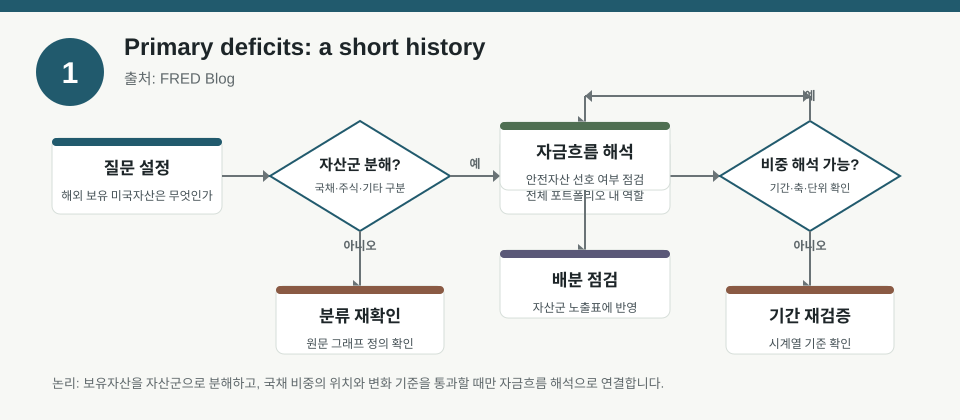
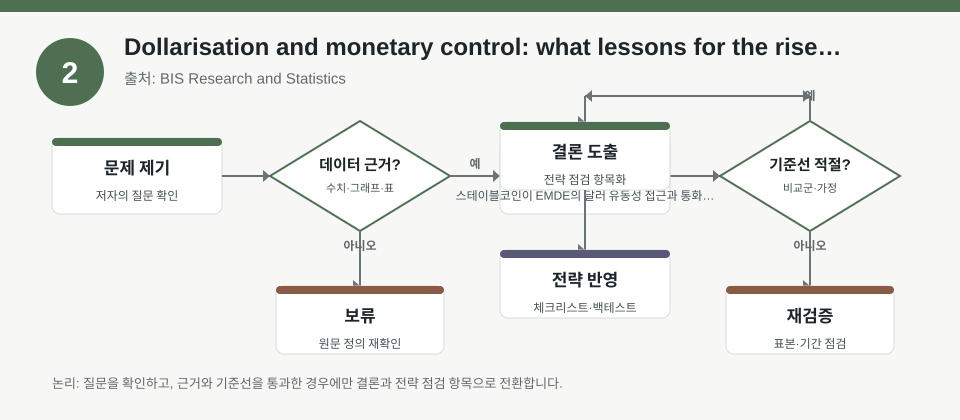
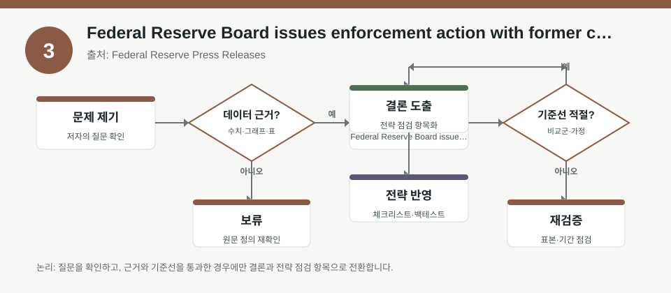

핵심 요약
- 결론: 이번 자료들은 미국 재정, 달러화/스테이블코인, 은행 규제 리스크를 통해 한국 투자자가 환율·금리·유동성·규제 노출을 점검하는 데 유용합니다.
- 원칙: 수치와 효과 방향은 원문 메타데이터만으로 단정하지 말고, 실제 그래프·표·정의·표본기간을 원문에서 재확인해야 합니다.
주목할 자료
| 번호 | 자료 | 출처 | 원문 | 핵심 내용 | 데이터 포인트 | 리스크/한계 |
|---|---|---|---|---|---|---|
| 1 | Primary deficits: a short history | FRED Blog | 원문 보기 | 미국 재정적자를 총적자와 일차적 적자로 나눠 해석하는 방법을 정리한 자료입니다. | 이자비용 제외 여부, 재정 경로와 금리 민감도, 적자 정의 차이 확인 | 그래프의 기간·정의·분해 기준을 확인해야 하며, 단일 지표로 재정 지속성을 단정할 수 없습니다. |
| 2 | Dollarisation and monetary control: what lessons for the rise of stablecoins? | BIS Research and Statistics | 원문 보기 | 스테이블코인이 EMDE의 달러 유동성 접근과 통화통제에 미칠 영향, 과거 예금 달러라이제이션과의 유사성을 다룹니다. | 달러 자산 노출, 통화대체 가능성, 자본유출·유동성 경로 점검 | EMDE 일반론을 한국 시장에 바로 대입하기 어렵고, 제도·규제·사용행태 차이를 검증해야 합니다. |
| 3 | Federal Reserve Board issues enforcement action with former chief lending officer of Heritage State Bank | Federal Reserve Press Releases | 원문 보기 | 개별 은행 임원에 대한 집행 조치로, 신용심사·내부통제·규제준수 리스크를 보여줍니다. | 은행 지배구조, 대출심사, 규제 집행 강도, 평판 리스크 확인 | 개별 사건을 업종 전체로 일반화하기 어렵고, 제재 사유·범위·시점의 세부 확인이 필요합니다. |
자료별 상세
1. Primary deficits: a short history

- 핵심: 미국 재정은 총적자와 일차적 적자를 구분해 봐야 하며, 이자비용이 적자 해석의 핵심 변수라는 점을 강조합니다.
- 데이터 포인트: 재정 경로를 볼 때 금리 수준, 국채 이자비용, 경기 둔화 국면의 자동안정화 효과를 함께 확인하는 관점이 필요합니다.
- 리스크: 그래프가 어떤 기간과 정의를 쓰는지, 총적자와 일차적 적자의 분리 방식이 무엇인지 원문에서 확인해야 합니다.
- 투자전략 반영 예시: KOSPI에서 금융·건설·수출주처럼 금리와 환율에 민감한 섹터를 볼 때 미국 재정과 금리 기대의 연결고리를 체크리스트에 넣을 수 있습니다.
- 실행 예시: 미국 재정 관련 뉴스가 나올 때마다 적자 정의, 국채금리 반응, 달러 강세 가능성, 한국 업종별 환율 민감도를 함께 메모하는 점검표를 만듭니다.
2. Dollarisation and monetary control: what lessons for the rise of stablecoins?

- 핵심: 스테이블코인은 달러 유동성 접근을 쉽게 만들 수 있어, 통화대체와 정책 전달 경로를 다시 보게 만드는 요인으로 해석됩니다.
- 데이터 포인트: 달러 표시 자산 선호, 현지 통화 예금 이탈 가능성, 규제 환경 변화가 통화통제와 유동성에 미치는 경로를 확인해야 합니다.
- 리스크: EMDE 사례를 한국에 그대로 적용하기 어렵고, 스테이블코인 사용 규모와 법·제도 차이를 검증해야 합니다.
- 투자전략 반영 예시: 한국 투자자는 원화 약세, 해외자산 비중, 달러 현금성 자산, 코인 관련 규제 뉴스가 KOSDAQ 변동성에 주는 영향을 점검할 수 있습니다.
- 실행 예시: 포트폴리오 점검표에 환노출 비중, 달러자산 보유 목적, 스테이블코인/크립토 규제 이벤트, 단기 유동성 비상계획을 항목화합니다.
3. Federal Reserve Board issues enforcement action with former chief lending officer of Heritage State Bank

- 핵심: 개별 은행 임원 제재는 대출심사, 내부통제, 감독 대응이 신용리스크의 일부라는 점을 보여줍니다.
- 데이터 포인트: 은행주나 금융주를 볼 때 자산건전성, 부실대출 확대 가능성, 규제 집행 강도, 평판 리스크를 함께 확인하는 틀이 유효합니다.
- 리스크: 해당 조치가 시스템 전체 리스크인지, 개별 인물·은행 문제인지, 제재 범위가 무엇인지 원문에서 확인해야 합니다.
- 투자전략 반영 예시: 한국 투자자는 은행·저축은행·카드·증권 섹터를 볼 때 규제 뉴스와 연체율, 충당금, 내부통제 이슈를 함께 체크할 수 있습니다.
- 실행 예시: 금융주 점검 시 감독당국 공지, 대손비용 추이, 대출 성장률, PF·부동산 익스포저, 내부통제 이슈를 한 장짜리 목록으로 관리합니다.
팩터·리스크·포트폴리오 관점
- 핵심: 세 자료 모두 단일 이벤트보다 노출 구조를 보는 것이 중요하며, 재정은 금리 팩터, 달러화는 FX·유동성 팩터, 제재는 신용·규제 팩터로 연결됩니다.
- 검수: 원문 표의 정의, 기간, 사례 범위, 규제 문맥을 확인하지 않으면 한국 포트폴리오에 대한 해석이 과도해질 수 있습니다.
정리
- 결론: 이번 자료들은 한국 투자자의 섹터 배분, 환율 민감도, 금리 민감도, 금융 규제 리스크 점검에 참고할 수 있는 해석 프레임을 제공합니다.
- 다음 확인: 원문에서 그래프의 기간, 변수 정의, 사례 범위, 정책 반응 경로를 먼저 확인한 뒤 체크리스트에 반영해야 합니다.